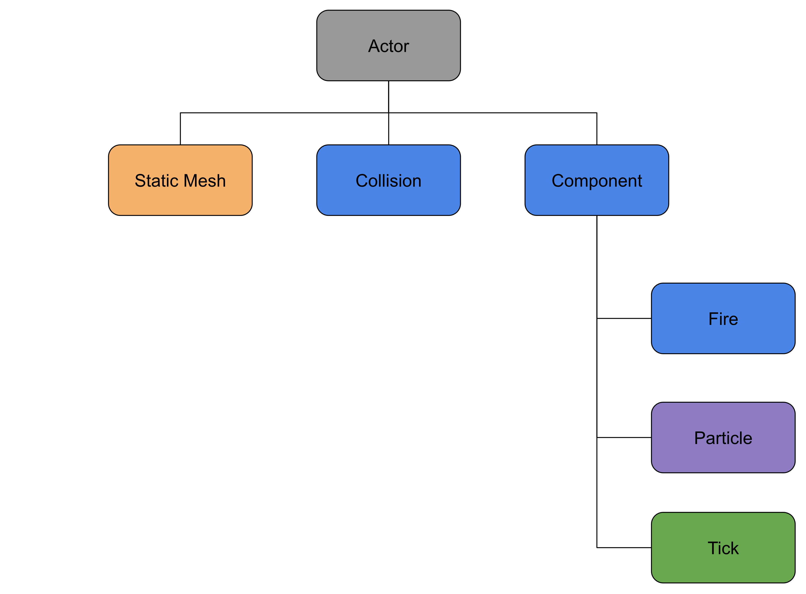
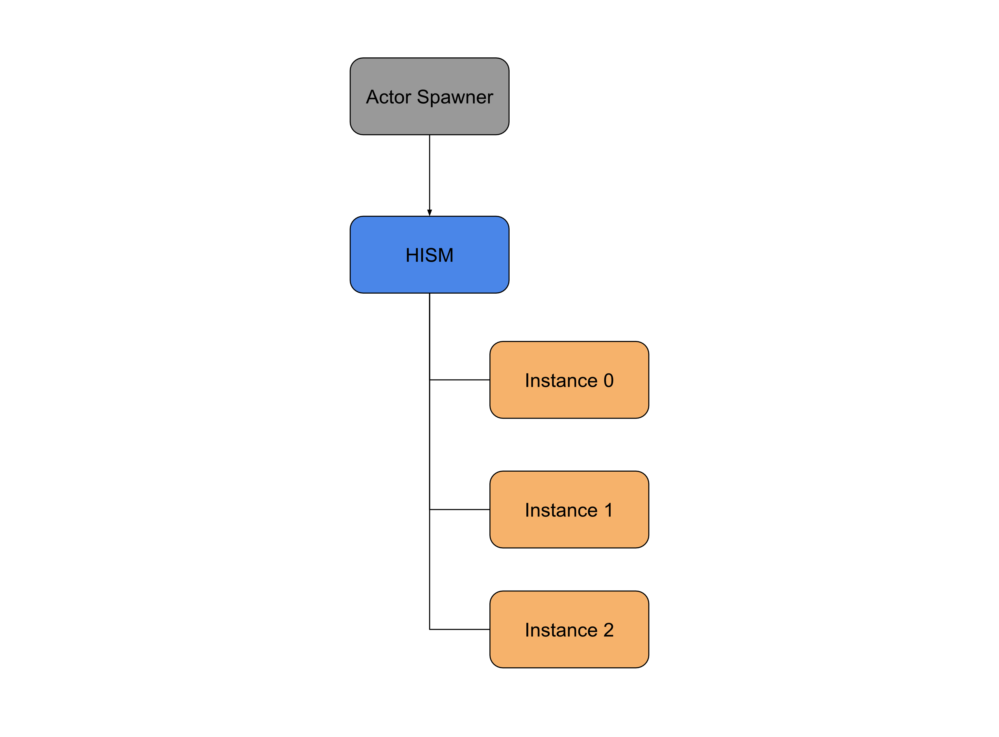
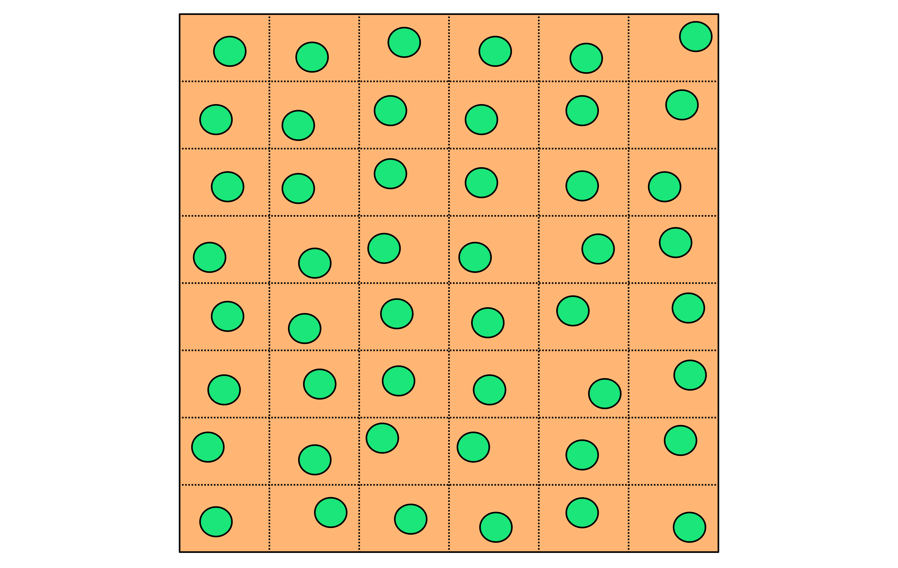
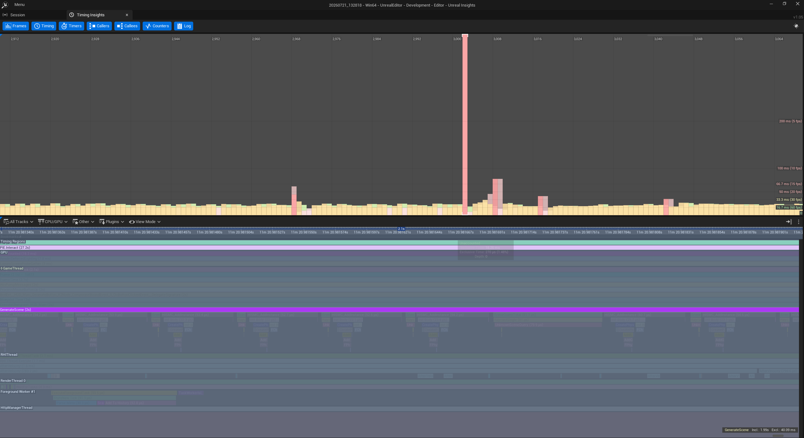
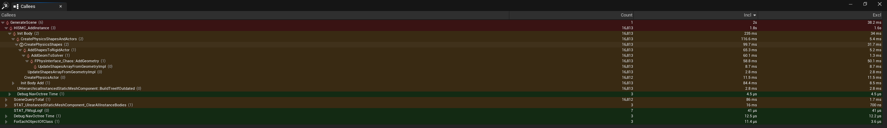
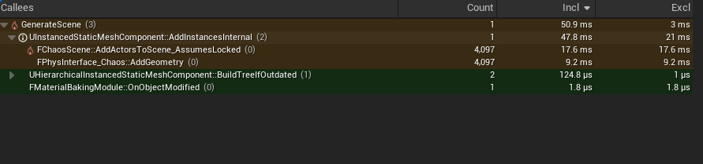

Fire propagation is a common feature in games, but simulating it across thousands of objects quickly becomes a performance challenge. This project explores the design and implementation of a real-time fire spreading simulation in Unreal Engine 5, with an emphasis on scalability, performance, and interactive visualization rather than scientific wildfire modelling.
To keep the focus on the simulation itself, vegetation is represented using simple cube instances instead of detailed trees or foliage. Primitive geometry removes rendering complexity from the experiment, allowing performance observations to primarily reflect the fire spreading system rather than expensive visual assets.
Throughout this article, I'll explain the reasoning behind the major design decisions that shaped the system.
Choosing the Right Representation
The first challenge was deciding how cube should be represented.
A straightforward implementation would spawn every cube object as an individual Actor.


This design is simple and flexible, but it becomes expensive as the number of objects grows.
Thousands of Actors meant:
- Thousands of UObject allocations
- Thousands of transforms
- Thousands of collision components
- Thousands of objects managed by Unreal's Actor system
Most of these objects weren't actually doing anything most of the time. That made me question whether Actors were the right representation.
Switching to Hierarchical Instanced Static Meshes
Instead of treating every cube as an Actor, I changed the design so that only one Actor existed.


Because every cube shares the same mesh and material, HISM allows Unreal Engine to batch render efficiently while significantly reducing draw calls and memory usage. Using HISM provides several advantages:
- Lower memory overhead
- Reduced draw calls
- Hierarchical culling
- Excellent scalability for thousands of instances
However, this decision also introduces an important limitation. Unlike Actors, HISM instances cannot independently own Components, execute gameplay logic, or Tick. This means the fire simulation itself cannot live inside each cube instance.
So I had to build that system myself.
Separating Rendering from Gameplay
Once I moved to HISM, I needed somewhere to store the simulation data. That's where FFireInstanceData came from.
Rather than attaching behaviour to every cube, I kept all of the fire information inside a lightweight struct.
USTRUCT(BlueprintType)
struct FFireInstanceData
{
GENERATED_BODY()
UPROPERTY()
AActorSpawner* Spawner = nullptr;
UPROPERTY()
EFireState FireState = EFireState::Fresh;
UPROPERTY()
float ElapsedTime = 0.f;
// World time when this instance was last updated
UPROPERTY()
float LastUpdateTime = 0.f;
UPROPERTY()
int32 InstanceIndex = -1;
// Cached world location (update if the instance moves)
UPROPERTY()
FVector CachedLocation = FVector::ZeroVector;
void StartBurn(float CurrentTime)
{
FireState = EFireState::Burning;
ElapsedTime = 0.f;
LastUpdateTime = CurrentTime;
}
};
Separating gameplay logic from rendering keeps the rendering pipeline lightweight while allowing thousands of cube objects to participate in the simulation.
Procedural Scene Generation

Rather than hard-coding cube locations, I generate a grid of candidate positions across the simulation area. Each grid point receives a small random offset to break up the uniform pattern, producing a more natural-looking distribution while still maintaining a minimum spacing between instances.

for (float X = MinX; X <= MaxX; X += step)
{
for (float Y = MinY; Y <= MaxY; Y += step)
{
FCandidate C;
float RandomOffsetX = FMath::FRandRange(-maxScatter, maxScatter);
float RandomOffsetY = FMath::FRandRange(-maxScatter, maxScatter);
C.Pos = FVector( X + RandomOffsetX, Y + RandomOffsetY, 0.f );
C.MinX = MinX;
C.MaxX = MaxX;
C.MinY = MinY;
C.MaxY = MaxY;
CandidatePositions.Add(C);
}
}
The code snippet works in three stages:
- Generate a regular grid using a configurable spacing variable named
stepso vegetation is distributed evenly across the landscape. - Apply a random offset
FRandRangeto each grid point to avoid an artificial, perfectly aligned appearance. - Store each location as a candidate, which will later be projected onto the landscape and randomly selected during spawning.
This approach gives me a predictable upper bound on the number of possible spawn locations while still producing a different layout each time the scene is generated.
Spatial Hash Grid
While designing the fire spreading simulation, I knew that a simple neighbour search wouldn't scale well as the number of cubes increased. To avoid that bottleneck, I decided to implement a spatial hash grid. Each cube is assigned into a grid cell according to its world position once its generated, allowing the simulation to search only nearby cubes when spreading fire.
void AFireManager::InsertInstanceIntoGrid(int32 FireArrayIndex)
{
if (!fireInstances.IsValidIndex(FireArrayIndex)) return;
const FVector& Pos = fireInstances[FireArrayIndex].CachedLocation;
int32 CX = 0, CY = 0;
GetCellCoords(Pos, CX, CY);
int64 Key = ComputeCellKey(CX, CY);
TArray<int32>& Bucket = SpatialHashGrid.FindOrAdd(Key);
Bucket.AddUnique(FireArrayIndex);
}
Wind-Driven Fire Spread
I didn't want fire to spread equally in every direction because that's not how real fires behave. Instead, I wanted the wind to influence where the fire was more likely to spread, while still allowing it to occasionally spread sideways or even slightly against the wind.
// Direction from source to target
const FVector ToTarget = (TargetLoc - SourceLoc).GetSafeNormal();
// Wind influence (dot product)
const float WindDot = FVector::DotProduct(ToTarget, WindNorm);
// Minimum spread factor ensures fire can always spread a bit (e.g., 10%)
const float MinFactor = 0.1f;
// Apply wind influence, scaled and clamped between MinFactor and 1 + windStrength
const float WindFactor = FMath::Clamp(1.0f + WindDot * windSpeed, MinFactor, 1.0f + windSpeed);
// Final chance
float FinalChance = spreadChance * WindFactor;
The dot product tells me whether the target object is positioned with or against the wind. If it is downwind, the ignition probability increases. If it is upwind, the probability decreases but never reaches zero because of the minimum spread factor. This creates a spread pattern that feels much more natural instead of expanding as a perfect circle.
Fire State Lifecycle
When a cube is ignited, I first check whether it is already burning or has completely burnt out. This prevents the same cube from being ignited multiple times. Once the cube starts burning, its state is updated and the burn progress is reset to 0%. I also update the HISM custom data so the material can immediately display the visual transition from a fresh cube to a burning one.
void AFireManager::IgniteInstance(FFireInstanceData& Instance)
{
// Already bruning or done
if (Instance.FireState == EFireState::Burning || Instance.FireState == EFireState::Burnt) return;
// Start burning using current world time
Instance.StartBurn(GetWorld()->GetTimeSeconds());
if (Instance.Spawner && Instance.Spawner->HISM)
{
Instance.Spawner->HISM->SetCustomDataValue(Instance.InstanceIndex, 0, 1.f); // e.g., 1 = burning
Instance.Spawner->HISM->SetCustomDataValue(Instance.InstanceIndex, 1, 0.f); // Reset burn progress
}
}
As the burn timer progresses, each cube gradually approaches 100% burn progress. Once that point is reached, its state changes to Burnt, meaning it can no longer ignite neighbouring cubes. The custom data is updated one final time so the material reflects the burnt appearance, ensuring the simulation state and visual representation always remain synchronized.
// When burn finished
if (Progress >= 1.f)
{
Instance.FireState = EFireState::Burnt;
if (Instance.Spawner && Instance.Spawner->HISM)
{
Instance.Spawner->HISM->SetCustomDataValue(Instance.InstanceIndex, 0, 2.f, true);
Instance.Spawner->HISM->SetCustomDataValue(Instance.InstanceIndex, 1, 1.f, true);
}
}
Avoiding Tick
One design decision I made early on was to avoid using Tick(), since the simulation doesn't need to update every frame. Instead, I used timers, which provide better control over the update cycle and make it easy to pause and resume the simulation when needed.
// Spread timer
if (!GetWorld()->GetTimerManager().IsTimerActive(spreadTimerHandle))
{
GetWorld()->GetTimerManager().SetTimer(spreadTimerHandle, this, &AFireManager::TrySpread, 0.5f, true);
}
// Burn update timer (every 0.1s)
if (!GetWorld()->GetTimerManager().IsTimerActive(burnUpdateTimerHandle))
{
GetWorld()->GetTimerManager().SetTimer(burnUpdateTimerHandle, this, &AFireManager::UpdateBurnProgress, 0.1f, true);
}
The simulation still looks smooth, but the CPU isn't wasting time checking thousands of cubes every frame.
Limiting the World
Originally I experimented with spawning cubes across large landscape. It looked nice, but it didn't really improve the simulation because most of the cubes were simply too far away to matter.
Eventually I decided to reduce the landscape area to 100×100 metres so that I can immediately see meaningful fire behaviour instead of staring at huge empty areas.
Also I could pack cubes much more densely while keeping the simulation manageable for now.
Interactive Controls
The simulation exposes several parameters through a UserWidget.
- Wind Speed
- Wind Direction
- Spread Chance
- Spread Radius
- Burn Time
- Pause/Resume button
- As well as button to generate new HISM instances

Changes are applied immediately without rebuilding the simulation.
Profiling and Optimisation
Once everything was working, I increased the cube count from 100 to 1000 cubes. Everything still felt fine.
Then I tried spawning 5000 cubes. The simulation itself ran smoothly, but everytime AActorSpawner::GenerateScene() was running, Unreal froze for about two seconds before anything appeared.
At first I assumed the renderer was struggling. It wasn't. The delay happened before the cubes were even visible.
To understand what was causing the freeze, I profiled the GenerateScene() using Unreal Insights. A single call to the function took 2 seconds to complete, which explained the noticeable freeze every time I generated a new scene with 5000 cubes.


As shown below, nearly the entire execution time was spent inside HISM->AddInstance(), which internally creates the physics bodies, registers collision geometry, and updates the hierarchical instance tree for every cube added.


while (PlacedCount < AttemptTarget && CandidatePositions.Num() > 0)
{
....
int32 Index = HISM->AddInstance(InstanceTransform);
if (fireManager)
fireManager->RegisterFireComponent(Index, this);
PlacedCount++;
}
Looking at the profiler and the code, I realised I was asking Unreal to do the same expensive work 5000 times. Instead of adding each cube one by one, I collected all of their transforms first and submitted them in a single AddInstances() call. It was a surprisingly small change, but it removed a huge amount of unnecessary overhead.
while (PlacedCount < AttemptTarget && CandidatePositions.Num() > 0)
{
....
Transforms.Add(FTransform(InstanceRotation, FinalPos, ObjScale));
//int32 Index = HISM->AddInstance(InstanceTransform);
PlacedCount++;
}
Index = HISM->GetInstanceCount();
HISM->AddInstances(Transforms, false, true, false);
for (int32 i = 0; i < Transforms.Num(); i++)
{
fireManager->RegisterFireComponent(Index + i, this);
}
After batching the instance creation, the same function completed in approximately 50ms. Most of the expensive overhead disappeared, leaving only the engine's internal work of registering the instances with Chaos Physics.


The profiler showed a significant improvement, but the change was even more obvious during testing. What had previously caused a noticeable pause now generated the entire scene almost instantly.
Conclusion
I hope this breakdown is useful to anyone building large-scale gameplay systems in Unreal Engine. While none of the techniques I used are particularly groundbreaking, understanding when to use HISM, spatial hashing, and Unreal Insights made a significant difference. Sometimes, good performance simply comes from understanding how the engine works and avoiding work it doesn't need to do.